<!DOCTYPE html>
<html>
<head>
	<title></title>
</head>
<body style="cursor: auto;">&nbsp;</body>
</html>
<title></title>
<meta http-equiv="Content-Type" content="text/html; charset=utf-8"><meta name="viewport" content="width=device-width, initial-scale=1">


<table border="0" cellpadding="0" cellspacing="0" style="border-collapse:collapse;border:none">
	<tbody>
		<tr style="page-break-inside:avoid">
			
			
		<td width="33%">
			    
			    <p align="center" style="text-align:center"><span style="font-size:10.0pt;font-family:Zapfino">Season&#39;s Greetings from San Diego, December 2025</span></p>
			    
			<p style="margin-left:10.0pt"><span style="font-size:12.0pt;font-family:&quot;Tekton Pro&quot;">

				This year seems to have gone by in a flash! It doesn't feel like any time has gone by since I wrote my last letter and I had to check my photo album to figure out what to write about. Maybe it's an age thing :)</span></p>

			<p style="margin-left:10.0pt"><span style="font-size:12.0pt;font-family:&quot;Tekton Pro&quot;">

 				There have not been many changes for me. I am happily still teaching at High Tech Elementary, and am finally on a permanent (non-probationary) contract at a school! It's been 19 years since I became a certified teacher and it seems crazy that it's taken me so long to get here in a school that I love. Retirement is not an option for a few years yet, and fingers crossed I will get to stay at this school until that time comes.
				</span></p>
				
			<p align="center" style="margin-top:6.0pt; text-align:center"></p>


			<p style="margin-left:10.0pt"><span style="font-size:12.0pt;font-family:&quot;Tekton Pro&quot;">
					
					Lisa completed her teacher training and I am so proud of her! I finally got to see her walk across a graduation stage (her bachelor's was during COVID, so she never got to do it after earning her BSc). Not only did she graduate, she immediately got hired by the school that she worked at during her student teaching - Rancho Buena Vista High School. She is teaching World History and AP US History to 10th and 11th graders. Unlike her mom, who took 16 years to get hired as a full-time teacher, she is already on her way! I also love that she is still local to me - at least for the moment ;)

				</span></p>
			
				<p align="center" style="margin-top:6.0pt; text-align:center">
					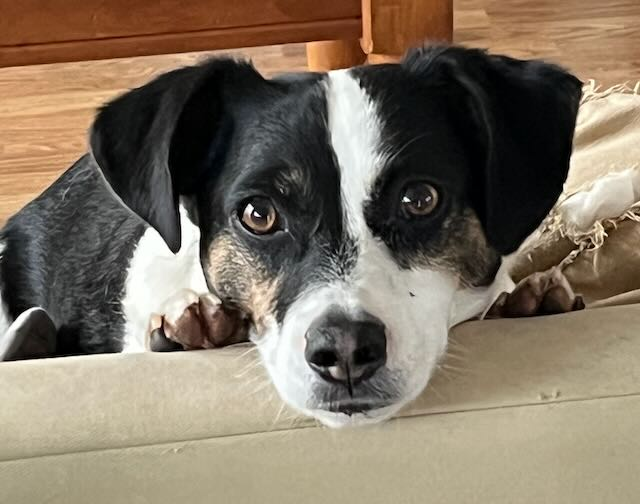
			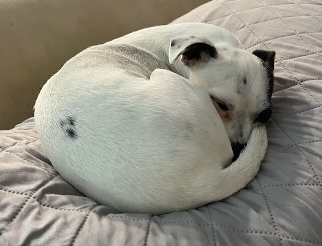
			
			
			</p>		
			
						<p style="margin-left:10.0pt"><span style="font-size:12.0pt;font-family:&quot;Tekton Pro&quot;">


			Teddy and Sky are still crazy pups. Between climbing out of their safety pen and engaging with their neighborhood nemeses, there is never a dull moment! </span></p>
</td>
<td width="33%">
			
			<p style="margin-left:10.0pt">
			<span style="font-size:12.0pt;font-family:&quot;Tekton Pro&quot;">

				These days, my social world is split between friends from my Irish dancing days, run club buddies (West Coast Road Runners), and pickleball partners (San Diego Pickleball - see photo). I did not participate in many running events this year, but I did complete the San Diego Rock N Roll Half Marathon (Party Pace - see photo) and a couple of 5K's. I still LOVE to go out on the water on my paddleboard (see photo), but I don't get out as often as I'd like.
				
			</span></p>
	
	
	<p align="center" style="margin-top:6.0pt;text-align:center">
				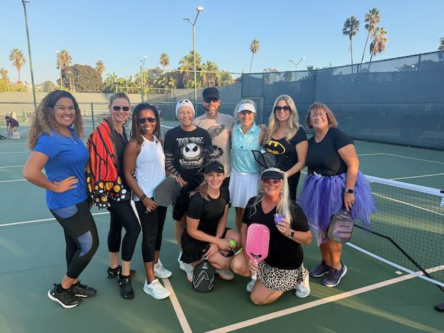
			    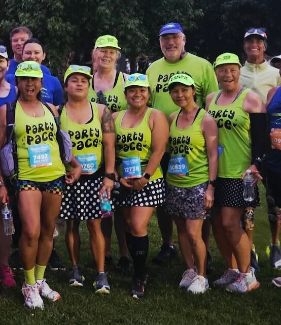 
			    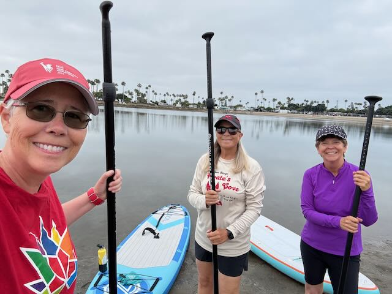 

			</p>
			
			<p style="margin-left:10.0pt">
			<span style="font-family: &quot;Tekton Pro&quot;; font-size: 16px;">

				A few bucket list items I got to strike off this year were a visit to The Magic Castle (thanks to a friend who knows one of the magicians), attending a Savannah Bananas game, and a Weird Al concert. None disappointed. I am grateful to live in a city that gets so many good concerts, shows, and events. If they don't come to San Diego, L.A. is just "up the road" (even if it might take 3 hours to get there IYKYK).
				</span>	
			</p>
		<p align="center" style="margin-top:6.0pt;text-align:center">
							
			    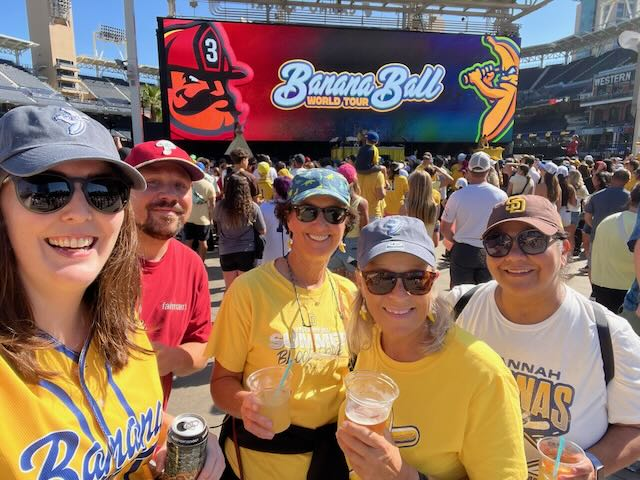 

	</p>
				    <p style="margin-left:10.0pt">
			<span style="font-size:12.0pt;font-family:&quot;Tekton Pro&quot;">
				
				One of the major changes to the house this year was the conversion of my backyard from a weed-infested jungle to a place where I can entertain friends and hang out in the gorgeous San Diego climate. I've been able to host a couple of gatherings since it was completed (August) and I love it! The addition of a few fire tables made a big difference this month.
			</span>
			<p align="center" style="margin-top:6.0pt;text-align:center">
							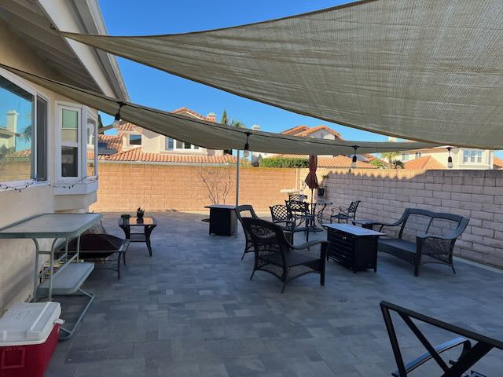
							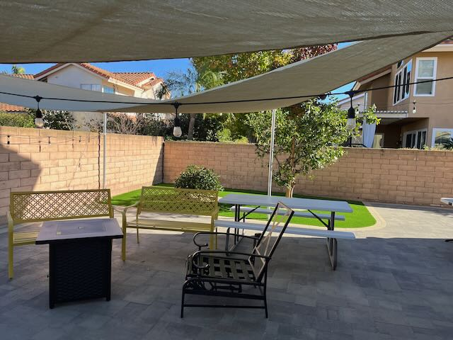
	</p>
			</td>
			
			<td width="33%">

	 <p style="margin-left:10.0pt">
			<span style="font-size:12.0pt;font-family:&quot;Tekton Pro&quot;">

			Travelwise, I stayed home for almost the entire year! However, November became a  month for adventure. Firstly, my great friend Jessica and I flew from Tijuana to San Miguel de Allende, Mexico. We had a wonderful time exploring in the city and a nearby winery. Delicious food, friendly people, and gorgeous scenery! Music everywhere! Five stars!</span></p>
			
		<p align="center" style="margin-top:6.0pt;text-align:center">
				
			    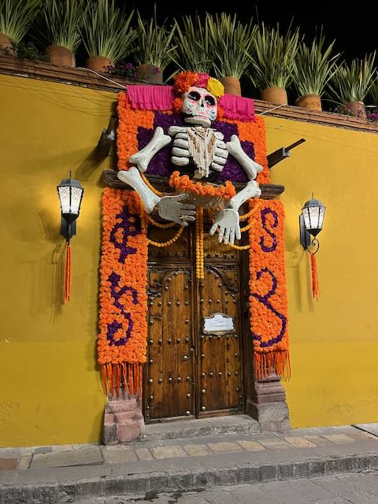 
			     

			</p>
			<p style="margin-left:10.0pt"><span style="font-size:12.0pt;font-family:&quot;Tekton Pro&quot;">

			Just before Thanksgiving, I was able to join my Irish dance friends at their annual competition which this year was held in Spokane, Washington. I got to see them perform in the teams events and after a fun night on the town, we headed to Chelan for a couple of days of wine tasting. The scenery was spectacular, the best company, and the wine wasn't bad either.</span></p>

						<p align="center" style="margin-top:6.0pt;text-align:center">
				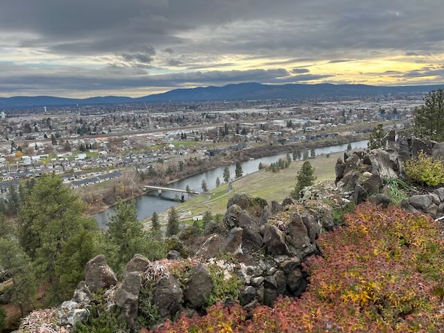
			    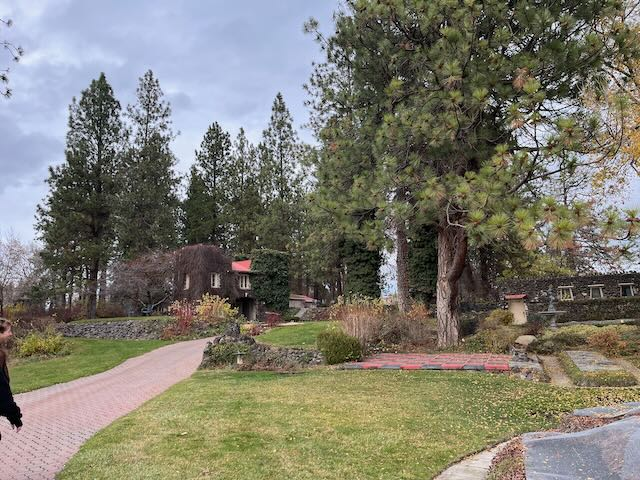 
			    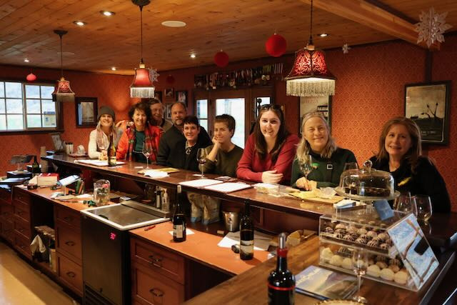 

			</p>

			<p style="margin-left:10.0pt"><span style="font-size:12.0pt;font-family:&quot;Tekton Pro&quot;">All in all, it has been another good year! Great friends, fun times, a rewarding job, and a healthy happy life!</span></p>
	<p align="center" style="margin-top:6.0pt;text-align:center">
		
		 
		</p>
		
			<p align="center" style="margin-bottom:6.0pt;text-align:center"><span style="font-size:10.0pt;font-family:Zapfino">Wishing you all a very happy holiday season!
			Love, Jackie</span></p>

			</td>
		</tr>
	</tbody>
</table>
